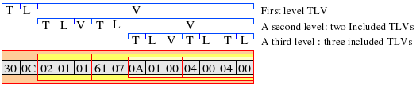
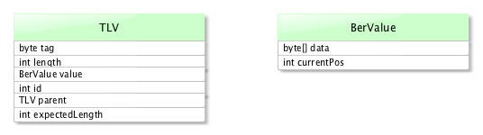
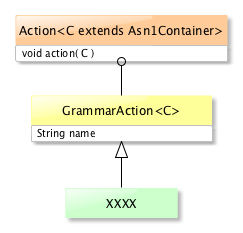

LDAP API
Downloads
Getting Started
Documentation
- Five minute tutorial
- User Guide
- API 1 to 2 migration
- JavaDocs 2
- JavaDocs
- Cross-Reference 2
- Cross-Reference
- Developer Guide
- Internal Guide
Support
Community
About Apache
4.1 - ASN/1 TLV
What are TLVs ?
The acronym TLV stands for Tag, Length and Value. It’s a way to encode a piece of information with a type, a length followed by the information itself. Three points must be known:
- The Value part may contents other TLVs. One can see TLVs as C structures, that can contain sub-structures.
- The Value may not exist, and in this case the Length will be 0.
- The Length part may not give the Value length: it is called an indefinite Length. In this - not so frequent - case, the Value must end with a specific terminator.
A quick sample
Let’s begin with a simple example, without too many explanations. This is the PDU (Packet Data Unit) of a LDAP BindRequest:

We can see in this picture that you have what is called a first level TLV. It encapsulates other TLVs. It’s basically a stream of bytes.
Type
Each Type contains information about the Value part of the TLV. It tells if the Value is a primitive or a constructed one, which type of primitive is the value, gives some contextual information. A Type can be coded on more than one byte. The first 3 bits give some contextual information about the Type, and the 5 following bits are either a label or the beginning of a multi-bytes label.
- Labels are numbers in [0..30], and they represent a specific ASN/1 element in the protocol description, like _CompareRequest ::= [APPLICATION 14] _ (here, the label is 14).
- If the label is 31, then more than one byte is used to encode the Type. In this case, we use the following bytes to compute the label, where each byte which high bit is one will be followed by another byte.
We limit the label to 2,097,151 as we encode the Type in one Java int :
b1 xxx[1-1111], b2 1[111-1111], b3 1[111-1111], b4 0[111-1111]
->
[111-1111][111-1111][111-1111]
->
0001-1111 1111-1111 1111-1111
->
0x1FFFFF
->
2,097,151
In LDAP or Kerberos, no label is higher than 30, so we always use 1 byte Types.
Other interesting information that we need to grab from a Type are stored in the two first bits (bit 7 and 6), and in the third bit (bit 5). The first two bits describe the class, the third tells if the TLV is a primitive (b5 = 0) or a constructed TLV (b5 = 1).
Length
Length gives the number of bytes of the Value, and nothing else. So the total length of a TLV will be:
TLV length = Tag length + Length length + Value length,
where the Value length is stored in the Length element.
The Length may be 0, which means that there is no value following.
How is Length encoded? A Value may be from 0 to N bytes long, with N < (256 ^ 126) - 1. This limit is purely hypothetic, of course. If we have to deal with huge objects like pictures or movies, their length will not exceed a few MBytes or a few GBytes
Typically, we will find five kind of Lengths :
- zero length values;
- values with a length less than 128 bytes
- values with a length between 128 and 256 ^ 4 bytes long (an int will be able to hold 4 bytes);
- values above 256 ^ 4 bytes long
- values which length is not defined by the Length element.
The last type of Length could occurs if the sender does not know the length of the value while it is sending it. LDAP protocol does not allow those kind of values, which are dangerous because you need to read the full Value to know its length.
The fourth type could also be ignored (4 GBytes is quite a huge size for an LDAP element …), so we can decide that we won’t accept those Values. It seems reasonable.
As the Length can be stored in more than one byte, we have to take care of fragmented PDU : we may receive only the first bytes, and have to wait for the rest to be received. The idea is to freeze and start again when we receive some more data.
In any case, if the first byte is > 0x7F, that means it’s a multi-bytes length, and we have to process the following bytesto get the real length. In this case, the first byte contains teh number of expected following bytes. Typically :
0x74 -> 116
0x82 0x02 0x84 : 2 bytes, length = 2 * 16 + 132 -> 164
0x81 0x84 : 1 byte, length = 132
Value
Value carries the ‘meat’ of a TLV. Depending on the Type, it’s either a primitive value, or a constructed one (which means it contains a TLV or a set of TLVs). Remember that bit 5 of the Type tells if the Value is primitive ( b5 == 0) or constructed (b5 == 1).
- If we have a primitive Value, we have to read Length byte and we are done
- If we have a constructed Value, we have to process it as one or more TLV.
TLV processing
In the API, the TLV processing is done in the Asn1Decoder class, and more specifically by the decode( ByteBuffer stream, Asn1Container container ) method, which takes a ByteBuffer as input, and feed a container as a result.
The important thing to understand is that this method can be called repetively, until a message is fully decoded, as soon as we feed it with some new ByteBuffer. The Container instance will contain the result, as soon as its state has switched to PDU_DECODED.
While processing a TLV, when we are done with the Value part, the decoder will check if any action is to be executed. The action is associated to the grammar in use, which is stored in the container. Here is the part that call the action, in the Asn1Decoder.treatTLVDoneState() method :
private boolean treatTLVDoneState( ByteBuffer stream, Asn1Container container ) throws DecoderException
{
// First, we have to execute the associated action
container.getGrammar().executeAction( container );
...
So the Container must contain the grammar, and the current state. We may not have any action to execute, either because none is associated with the current transition or because we are at the end of the message.
TLV implementation
The TLV class stores the Type, Length and Value, plus some extra information, like a unique id, a reference to its parent’s TLV and the expected length when the included Value is a set of TLV.

You won’t have tp manipulate TLV frequently, except in the actions, where you might fetch its Length and Value content, using getLength() and getValue().getData() methods respectively.
Action
This is quite a simple class and hierarchy :

As we can see, each Action has a name (this is only used for debug purpose) and a action(Asn1Container) method, which does what it needs. The Asn1Container parameter gives access to the data through the Asn1Container.getCurrentTLV().getValue().getData() method, and to the message being processed.
At this point, an example would be useful.
Example
Let say we want to implement a decoder for the following message :
EntryChangeNotification ::= SEQUENCE
{
changeType ENUMERATED
{
add (1),
delete (2),
modify (4),
modDN (8)
},
previousDN LDAPDN OPTIONAL, -- modifyDN ops. only
changeNumber INTEGER OPTIONAL -- if supported
}
You don’t need to know anything about this message, what is important is how we will decode it.
The first thing we need to create is an interface and a implementation for the Java object that will represent the EntryChange object.
Here is the interface (note that it’s a Control, but it’s a irrelevant information here) :
public interface EntryChange extends Control
{
/** No defined change number */
int UNDEFINED_CHANGE_NUMBER = -1;
/** The EntryChange control */
String OID = "2.16.840.1.113730.3.4.7";
/**
* @return The ChangeType
*/
ChangeType getChangeType();
/**
* Set the ChangeType
*
* @param changeType Add, Delete; Modify or ModifyDN
*/
void setChangeType( ChangeType changeType );
/**
* @return The previous DN
*/
Dn getPreviousDn();
/**
* Sets the previous DN
*
* @param previousDn The previous DN
*/
void setPreviousDn( Dn previousDn );
/**
* @return The change number
*/
long getChangeNumber();
/**
* Sets the ChangeNumber
*
* @param changeNumber The ChanegNumber
*/
void setChangeNumber( long changeNumber );
}
What is important is that we declare all the setters and getters for the object fields that matter : changeType, previousDN and changeNumber
The implementation is not really complex :
/**
* A simple implementation of the EntryChange response control.
*
* @author <a href="mailto:dev@directory.apache.org">Apache Directory Project</a>
*/
public class EntryChangeImpl extends AbstractControl implements EntryChange
{
/** The changeType */
private ChangeType changeType = ChangeType.ADD;
private long changeNumber = UNDEFINED_CHANGE_NUMBER;
/** The previous Dn */
private Dn previousDn = null;
/**
*
* Creates a new instance of EntryChangeControl.
*
*/
public EntryChangeImpl()
{
super( OID );
}
/**
* {@inheritDoc}
*/
@Override
public ChangeType getChangeType()
{
return changeType;
}
/**
* {@inheritDoc}
*/
@Override
public void setChangeType( ChangeType changeType )
{
this.changeType = changeType;
}
/**
* {@inheritDoc}
*/
@Override
public Dn getPreviousDn()
{
return previousDn;
}
/**
* {@inheritDoc}
*/
@Override
public void setPreviousDn( Dn previousDn )
{
this.previousDn = previousDn;
}
/**
* {@inheritDoc}
*/
@Override
public long getChangeNumber()
{
return changeNumber;
}
/**
* {@inheritDoc}
*/
@Override
public void setChangeNumber( long changeNumber )
{
this.changeNumber = changeNumber;
}
/**
* @see Object#hashCode()
*/
@Override
public int hashCode()
{
int h = super.hashCode();
h = h * 37 + ( int ) changeNumber;
h = h * 37 + ( changeType == null ? 0 : changeType.hashCode() );
h = h * 37 + ( previousDn == null ? 0 : previousDn.hashCode() );
return h;
}
/**
* {@inheritDoc}
*/
@Override
public boolean equals( Object o )
{
if ( !super.equals( o ) )
{
return false;
}
EntryChange otherControl = ( EntryChange ) o;
return ( changeNumber == otherControl.getChangeNumber() ) && ( changeType == otherControl.getChangeType() )
&& ( previousDn.equals( otherControl.getPreviousDn() ) );
}
/**
* Return a String representing this EntryChangeControl.
*/
@Override
public String toString()
{
StringBuilder sb = new StringBuilder();
sb.append( " Entry Change Control\n" );
sb.append( " oid : " ).append( getOid() ).append( '\n' );
sb.append( " critical : " ).append( isCritical() ).append( '\n' );
sb.append( " changeType : '" ).append( changeType ).append( "'\n" );
sb.append( " previousDN : '" ).append( previousDn ).append( "'\n" );
if ( changeNumber == UNDEFINED_CHANGE_NUMBER )
{
sb.append( " changeNumber : '" ).append( "UNDEFINED" ).append( "'\n" );
}
else
{
sb.append( " changeNumber : '" ).append( changeNumber ).append( "'\n" );
}
return sb.toString();
}
}
This is pretty much trivial.
We now need a Decorator to manipulate this instance. Here is the code :
public class EntryChangeDecorator extends ControlDecorator<EntryChange> implements EntryChange
{
/** Default value when no change number is provided */
public static final int UNDEFINED_CHANGE_NUMBER = -1;
/** A temporary storage for the previous Dn */
private byte[] previousDnBytes = null;
/** The entry change global length */
private int eccSeqLength;
/** An instance of this decoder */
private static final Asn1Decoder DECODER = new Asn1Decoder();
/**
* Creates a new instance of EntryChangeDecoder wrapping a newly created
* EntryChange Control object.
*
* @param codec The LDAP service instance
*/
public EntryChangeDecorator( LdapApiService codec )
{
super( codec, new EntryChangeImpl() );
}
/**
* Creates a new instance of EntryChangeDecorator wrapping the supplied
* EntryChange Control.
*
* @param codec The LDAP service instance
* @param control The EntryChange Control to be decorated.
*/
public EntryChangeDecorator( LdapApiService codec, EntryChange control )
{
super( codec, control );
}
/**
* Internally used to not have to cast the decorated Control.
*
* @return the decorated Control.
*/
private EntryChange getEntryChange()
{
return getDecorated();
}
/**
* Compute the EntryChangeControl length
*
* <pre>
* 0x30 L1
* |
* +--> 0x0A 0x0(1-4) [1|2|4|8] (changeType)
* [+--> 0x04 L2 previousDN]
* [+--> 0x02 0x0(1-4) [0..2^63-1] (changeNumber)]
* </pre>
*
* @return the control length.
*/
@Override
public int computeLength()
{
int changeTypesLength = 1 + 1 + 1;
int previousDnLength = 0;
int changeNumberLength = 0;
if ( getPreviousDn() != null )
{
previousDnBytes = Strings.getBytesUtf8( getPreviousDn().getName() );
previousDnLength = 1 + TLV.getNbBytes( previousDnBytes.length ) + previousDnBytes.length;
}
if ( getChangeNumber() != UNDEFINED_CHANGE_NUMBER )
{
changeNumberLength = 1 + 1 + BerValue.getNbBytes( getChangeNumber() );
}
eccSeqLength = changeTypesLength + previousDnLength + changeNumberLength;
valueLength = 1 + TLV.getNbBytes( eccSeqLength ) + eccSeqLength;
return valueLength;
}
/**
* Encodes the entry change control.
*
* @param buffer The encoded sink
* @return A ByteBuffer that contains the encoded PDU
* @throws EncoderException If anything goes wrong.
*/
@Override
public ByteBuffer encode( ByteBuffer buffer ) throws EncoderException
{
if ( buffer == null )
{
throw new EncoderException( I18n.err( I18n.ERR_04023 ) );
}
buffer.put( UniversalTag.SEQUENCE.getValue() );
buffer.put( TLV.getBytes( eccSeqLength ) );
buffer.put( UniversalTag.ENUMERATED.getValue() );
buffer.put( ( byte ) 1 );
buffer.put( BerValue.getBytes( getChangeType().getValue() ) );
if ( getPreviousDn() != null )
{
BerValue.encode( buffer, previousDnBytes );
}
if ( getChangeNumber() != UNDEFINED_CHANGE_NUMBER )
{
BerValue.encode( buffer, getChangeNumber() );
}
return buffer;
}
/**
* {@inheritDoc}
*/
@Override
public byte[] getValue()
{
if ( value == null )
{
try
{
computeLength();
ByteBuffer buffer = ByteBuffer.allocate( valueLength );
buffer.put( UniversalTag.SEQUENCE.getValue() );
buffer.put( TLV.getBytes( eccSeqLength ) );
buffer.put( UniversalTag.ENUMERATED.getValue() );
buffer.put( ( byte ) 1 );
buffer.put( BerValue.getBytes( getChangeType().getValue() ) );
if ( getPreviousDn() != null )
{
BerValue.encode( buffer, previousDnBytes );
}
if ( getChangeNumber() != UNDEFINED_CHANGE_NUMBER )
{
BerValue.encode( buffer, getChangeNumber() );
}
value = buffer.array();
}
catch ( Exception e )
{
return null;
}
}
return value;
}
/**
* {@inheritDoc}
*/
@Override
public ChangeType getChangeType()
{
return getEntryChange().getChangeType();
}
/**
* {@inheritDoc}
*/
@Override
public void setChangeType( ChangeType changeType )
{
getEntryChange().setChangeType( changeType );
}
/**
* {@inheritDoc}
*/
@Override
public Dn getPreviousDn()
{
return getEntryChange().getPreviousDn();
}
/**
* {@inheritDoc}
*/
@Override
public void setPreviousDn( Dn previousDn )
{
getEntryChange().setPreviousDn( previousDn );
}
/**
* {@inheritDoc}
*/
@Override
public long getChangeNumber()
{
return getEntryChange().getChangeNumber();
}
/**
* {@inheritDoc}
*/
@Override
public void setChangeNumber( long changeNumber )
{
getEntryChange().setChangeNumber( changeNumber );
}
/**
* {@inheritDoc}
*/
@Override
public Asn1Object decode( byte[] controlBytes ) throws DecoderException
{
ByteBuffer bb = ByteBuffer.wrap( controlBytes );
EntryChangeContainer container = new EntryChangeContainer( getCodecService(), this );
DECODER.decode( bb, container );
return this;
}
}